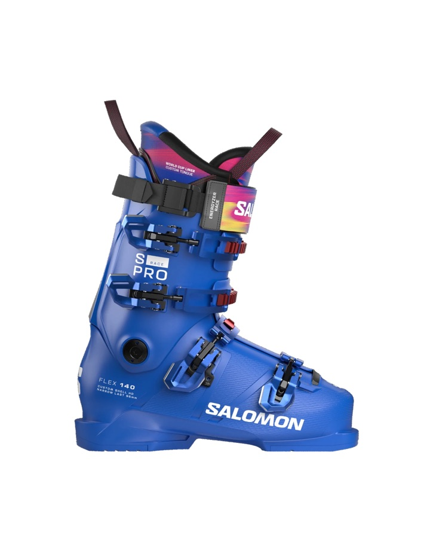

LOW volume
Nejužší skelet. Závodní a expertní úroveň, nekompromisní přenos síly.
- Salomon S/PRO RACE 140 Závodní tuhost pro maximální odezvu.
- Salomon S/PRO RACE 110 Expertní výkon s mírně tolerantnější flexí.
Bez úprav skeletu se závodní bota obvykle neobejde. Ty jsou moje práce.